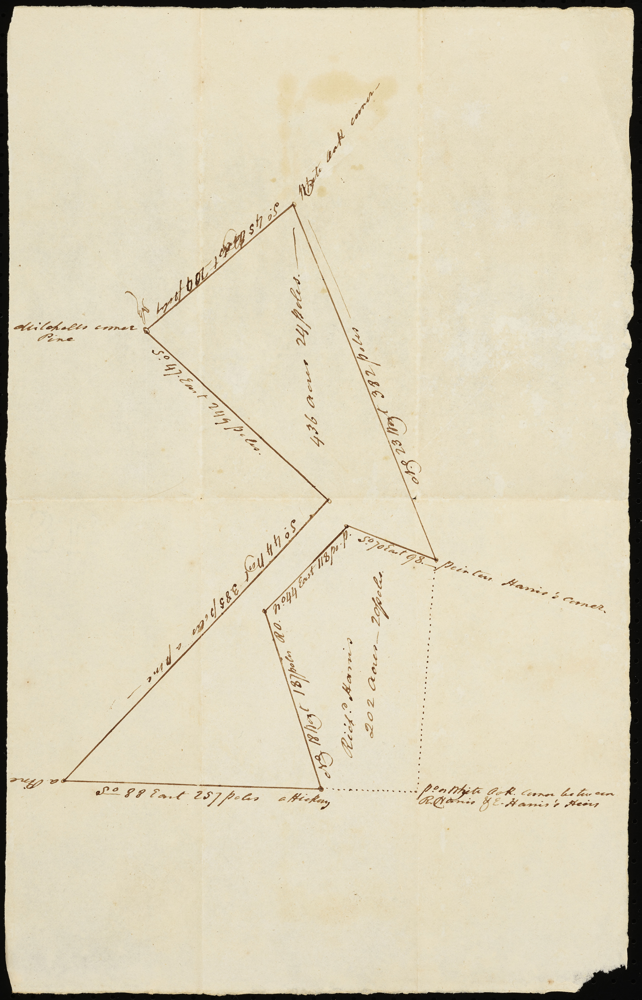

Sources
1776 — Tyree Harris to Richard Bennehan
Brick House Plantation
00133_2103_0006

1776-05-24 — Tyree & Mary Ann Harris to Richard Bennehan
00133_op0101 (description only)
00133_2106_0037 (plat)
appears on 00133_op0031
date: May 24, 1776
from: Tyree Harris and wife Mary Ann Harris
to: Richard Bennehan
amount paid: £100
acres: 893
description: All that tract or parcel of land lying on the south side of Flat River and Bounded as follows Beginning at a Spanish oak on the south side of said River near the mouth of a Gut James Harris’s corner, running along his line No. 57 W. 76 po. To a hickory, thence W. 54 po. To a hickory on said Harris’s line, John Garrard’s corner, thence No. 17 Wt. 320 po. along said Garrard’s line to a post oak Thomas Webb’s old corner, thence No. 53 Wt. 92 pole to a hickory, a corner tree of the several tracts belonging to Judith Stagg, John Garrard, and William Johnston, thence No 37 E. 164 po. To a hickory and sweet gum, near the trading path on a creek running behind Mrs. Stagg’s house up the various courses thereof to a hickory and Red oak it being the dividing line between the said Tyree Harris and the said Judith Stagg, thence No. 35 E. 82 po. To a Spanish oak, an ash, and a hickory on another Branch which is the dividing line between Charles Horton and the said Tyree Harris, thence down the said creek by the meanders thereof to an ash, a sycamore, and a mulberry tree at the mouth of said Creek, where it empties itself into Flat River, thence down the several course of the aforesaid River to the first station, and containing in the whole Eight hundred and Ninety three acres, be the same more or less, All which premises are more Particularly described and set forth in a plan or map thereof hereunto annexed to wit, One hundred Acres on the No. end of said tract was conveyed by Thomas Stagg to Thomas Harris by deed bearing date the Eleventh day of June in the year 1759, and two hundred acres thereto adjoining was conveyed by Wintworth Webb to the said Thomas Harris by Deed bearing date the Twenty sixth day of June in the year 1759, which said Two Tracts containing three hundred acres was conveyed by the said Thomas Harris to the above named Tyree Harris by Deed bearing date the second day of February in the year 1760, and by the said Tyree Harris and Elizabeth Widow of the said Thomas Harris was conveyed to Nathanial Harris, by deed bearing date the fifth day of November in the year 1761, and from the said Nathaniel Harris, recognized to the said Tyree Harris by deed bearing date the fifth day of May in the year 1767. And the southernmost or lower end of the said Tract containing five hundred and ninety three acres lineally descended from Henry Webb to the above named Thomas Webb, and by him Conveyed to the said Tyree Harris by deed bearing date the fifteenth day of May in the year 1767 which said [three?] several tracts together making Eight hundred and ninety three acres as aforesaid reference had to the sundry conveyances above mentioned will more fully and at large appear [paper torn]
- beginning at a Spanish oak on south side of Flat River near mouth of a gut James Harris’s corner
- along Harris’s line north 57° west 76 poles to a hickory (19 chains)
- west 54 poles to a hickory on Harris’s line, Gerrard’s corner (13.5 chains)
- north 17° west 320 poles along Gerrard’s line to a post oak Webb’s old corner (80 chains)
- north 53° west 92 poles to a hickory on corner of Stagg, Garrard, Johnston (23 chains)
- north 37° east 164 poles to a hickory and sweet gum near trading path on a creek behind Stagg’s house (41 chains)
- up the various courses of the creek to a hickory and red oak that is the dividing line between Harris and Stagg
- north 35° east 82 poles to Spanish oak, an ash, a hickory on another branch dividing Horton and Harris (20.5 chains)
- down creek to an ash, sycamore, and mulberry tree where the creek empties into the Flat River
- down Flat River to first station


1786-08-31 — James Monroe to Richard Bennehan
Orange DB 3-166
shown on 00133_2106_0037
date: August 31, 1786
from: James Freeland (high sheriff of Orange County) / James Monro
to: Richard Bennehan
amount paid: £80 current North Carolina money
acres: 503
description:
- beginning at a branch of the Flat River
- beginning at a pine at Mitchell’s corner
- along Bogan’s line south 45° east 224 poles to his corner (56 chains)
- [south 45° west 365 poles to the corner of the tract William Sutton lives (91.25 chains)]
- corner where William Seeton used to live south 87° east 314 poles to Thomas Webb’s line (78.5 chains)
- north 55° [5° east] 212 poles along Webb’s line to his other corner (53 chains)
- along his other tract north 17° west 320 poles [to a stake John Mitchel’s corner McStag’s line, thence along the same] to the beginning (80 chains)
1787-02-27 — Judith Stagg to Richard Bennehan
Orange DB 3-51
00133_op0006 (description only)
appears on 00133_op0031
date: February 27, 1787
from: heirs of Thomas Stagg dec’d
Judith Stagg (widow of Thomas Stagg)
William Ray and Mary
Stagg (daughter of Thomas and Judith Stagg)
George Laws Jr and Susanna Stagg (daughter of Thomas and Judith
Stagg)
Charles Dunnagon and Alicia Stagg (daughter of Thomas and Judith Stagg)
Lazares Tilly and
Elizabeth Stagg (daughter of Thomas and Judith Stagg)
Moses Leathers and Sarah Stagg (daughter of Thomas
and Judith Stagg)
Judith Stagg (daughter of Thomas and Judith Stagg)
to: Richard Bennehan
amount paid: £66
acres: 66
description: land situated lying & being in the county of Orange & state aforesaid on the south west side
of flat river called and known by the name of Stagg Old Raw Ground adjoining the lands of William Johnston
deceased & Richard Bennehan supposed to contain in the whole sixty six acres of land
1788-03-31 — Joseph Speed to Richard Bennehan
Orange DB 4-1
date: March 31, 1788
from: Joseph Speed
to: Richard Bennehan
amount paid: £580
acres: 320
description:
- beginning at a white oak on Flat River bank at George Laws’s corner
- running east along his line to poplar on Knap of Reeds 226 poles (56.5 chains)
- south down Knap of Reeds to Henry Morris’s (now Bennehan’s) corner 226 poles (56.5 chains)
- along his line west 226 (56.5 chains) to his corner on the river bank
- up the river to start
1789-10-15 — Caleb Brasfield to Richard Bennehan
Granville DB O-630
date: October 15, 1789
from: Caleb & Lucy Brasfield
to: Richard Bennehan
amount paid: £213 current money of North Carolina
acres: 153
description:
- beginning at a white oak on the bank of Neuse River at Bennehan’s corner
- north 88° east 110 poles to an elm at Bennehan and Peak’s corner (27.5 chains)
- along Peak’s line north 45° east 107 poles to Knap of Reed Creek (26.75 chains)
- down the creek to the river
- up the river to the beginning
1794-01-18 — James Harris to Richard Bennehan
Orange DB 5-75
date: January 18, 1794
from: James Harris
to: Richard Bennehan
amount paid: 60 pounds 10 shillings
acres: 320
description: all that tract or parcel of land situate and being in the county of Orange & in the fork of Flat River and Eno and being the land which my father James Harris did by his last will and testament bearing date the twenty sixth day of August 1785 give and devise unto me the said James Harris
1796-11-02 — John Martin to Richard Bennehan
Orange DB 5-648
date: November 2, 1796
from: John Martin
to: Richard Bennehan
amount paid: £200 Virginia money
acres: 450
description: a tract or parcel of land situate lying and being in the said state of North Carolina and in the said county of Orange on little river containing four hundred and fifty acres more or less and is bounded by the lands of the Richard Bennehan and others agreeable to the boundaries that is mentioned in two Deeds that are properly proved recorded and registered in the State of North Carolina wherein James Martin purchased the said land from William Ray and his wife and from Osson Martin and others as will fully appear by the said deeds and which said deeds the said Bennehan hath now in his possession the said land is the whole and all the lands the said James Martin owned and lived on in the said state of North Carolina and in the county of Orange for some time before his death and the said James Martin did in his last will and testament give and devise the said land to his brother John Martin and to his heirs forever and which said will is proved and recorded in the county court of Prince George in the state of Virginia and that after the death of the said James Martin the said John Martin his brother who then lived in the county of Chesterfield in the state of Virginia made and published his last will and testament wherein and whereby he gave devised and bequeath the above mentioned tract or parcel of land of four hundred and fifty acres more or less to his son John Martin and to his heirs and assigns forever who is the party to this deed and that the will of the said John Martin who was the brother to the said James Martin deceased is legally proved and recorded in the county of Chesterfield in the state of Virginia
1796-11-28 — UNC Trustees to Richard Bennehan
Orange DB 5-624
00133_op0011
00133_2106_0003
70117_005-0014_0049
appears on 00133_op0031
date: November 28, 1796
from: Trustees of the University of North Carolina
to: Richard Bennehan
amount paid: 55 pounds 11 shillings and sixpence
acres: 247
description:
- corner of Alves tract running east 46.5 chains to hickory on another Alves tract (Mitchell’s tract)
- north 40° east 31 chains to dead oak to Bennehan and Horton tracts
- 55° west 40 chains to hickory on Williams line
- north 82° west along said line 39.5 chains to Walters other corner
- south 5° east 52 chains along Walters line
1796-11-15 — John Marshall to Richard Bennehan
Granville DB Q-28
date: November 15, 1796
from: John Marshall
to: Richard Bennehan
amount paid: £108 current money of Virginia
acres: 120
description:
- beginning at a poplar on the bank of Knap of Reed Creek
- south 44° west 114 poles to a willow oak on Bennehan’s line (28.5 chains)
- south 250 poles to an elm and white oak on Bennehan’s corner (62.5 chains)
- with Bennehan’s line north 44° east 94 poles to a red oak on bank of Creek (23.5 chains)
- up the Creek to the beginning
1797-01-16 — Bryan Stonum to Richard Bennehan
Granville DB Q-27
date: January 16, 1797
from: Bryan Stonum
to: Richard Bennehan
amount paid: £60 Virginia currency
acres: 106
description:
- beginning at a hickory Veazey’s corner
- along Veazey’s line north 40° east 315 poles to a hickory Veazey’s other corner in Bullock’s line
- south 75 poles to a hickory
- south 45° west 350 poles to a red oak in Bennehan’s line
- north 75 poles to the beginning
1797-07-04 — James Williams to Richard Bennehan
Orange DB 6-41
appears in 00133_xop0032_0001
date: July 4, 1797
from: Andrew Murdock (sheriff) / James Williams
to: Richard Bennehan
amount paid: £222
acres: 461
description:
- beginning at a black oak corner of William Ray and Patrick Clark
- running east 74 chains
- north 55° west 5 chains
- north 63 chains
- west 70 chains
- south 65 chains
1799-11-28 — UNC Trustees to Richard Bennehan
Orange DB 8-233
00133_op0010
00133_2102_0001
appears on 00133_op0031
date: November 28, 1799
from: UNC Trustees / William Sheppard
to: Richard Bennehan
amount paid: £18
acres: 116
description:
- corner of Banks tract north 55° west 5 chains
- north 65 chains 50 links
- along Montgomery’s line east 4 chains
- north 22 chains
- north 55° east 12 chains [north 55° east 8 chains to a stake a corner to said Bennehan’s Rickets land]
- south 1.5° east 80 chains [thence with a line of the same south 4.5° east to and along a line of Dickens & Waites in all 80 chains]
- along Banks Tract south 35° west 20 chains 50 links
1801-04-16 — Anthony Ricketts to Richard Bennehan
Orange DB 10-46
00133_2103_0023
00133_2106_0076
00133_op0018 (1804-03-20)
00133_op0013
appears on 00133_op0031
date: April 16, 1801
from: Anthony Ricketts
to: Richard Bennehan
amount paid: 330 pounds 15 shillings
acres: 390
description:
- on waters of Flat River to a corner to Harris
- following his line south 35 degrees east 44 chains to a red oak
- north 35° east 41 chains to a red oak
- north 35° west 5 chains to a red oak
- with Harris’s line east 5 chains to a white oak
- on the river as it meanders to Horton’s corner
- along Horton’s line south 35° west 33 chains to a stake at a corner of Dickins & Waite
- along their lines north 35 degrees west 31 chains to a hickory
- south 55° west 36 chains & 50 links to a gum on a branch
- north 35° west 44 chains to a red oak on a line of McCulloh tract
- along McCulloh line north 4.5° west 14 chains to a stake [op0018: 19 chains]
- north 55 degrees east to the beginning
1801-12-23 — John Tilley Jr to Richard Bennehan
Orange DB 10-48
appears on 00133_op0031
date: December 23, 1801
from: John Tilley Jr
to: Richard Bennehan
amount paid: 197 pounds 7 shillings
acres: 222
description:
- on the waters of the Flat River
- north 35° west 44 chains
- along McCulloh’s line south 4.5° east 66 chains
- along Horton’s line north 35° east 21 chains 50 links
- south 55° east 41 chains
- north 35° west 6 chains
- north 55° east 17 chains
- north 35° east 19.5 chains
- with Bennehan’s line north 35° west 31 chains
- south 55° west 36.5 chains to the beginning
1802-06-03 — John Marshall to Duncan Cameron
Granville DB R-37
date: June 3, 1802
from: John Marshall & John Longmire
to: Duncan Cameron
amount paid: $100
acres: 585
description:
- beginning at a black oak John Green’s corner
- with his line north 300 poles to a red oak in Micajah Bullock’s line (75 chains)
- with his line west 151 poles to a stake in Bennehan’s line (37.75 chains)
- with his line south 41° west 124 poles to an ash on the Knap of Reed Creek (31 chains)
- down the creek to a red oak John Green’s corner
- with his line north 52° east to the beginning
1802-06-20 — Jacob Bledsoe to Richard Bennehan
Wake DB R-168
recorded date: June 20, 1802
deed date: March 16, 1802
from: Jacob Bledsoe
to: Richard Bennehan
amount paid: £462
acres: 462
description:
- beginning at McCallum’s corner red oak on bank of Neuse River at foot of a bridge
- north 58° east 8 poles to a stake (2 chains)
- north 44° west 15 poles to a post oak Daniels corner near saw mill (3.75 chains)
- with her line north 49° east 132 poles to a ? [33 chains)
- north 55° west 32 poles to a white oak near road (8 chains)
- north 53° east 180 poles to a pine (45 chains)
- north 8 poles to a pine (2 chains)
- east 163 poles to a black jack (40.75 chains)
- south 200 poles to a pine (50 chains)
- south 84° west 170 poles to a sweet gum at the dividing branch (42.5 chains)
- down various courses of the branch to a mouth at the River
- up the meanders of the river to the beginning
1802-06-20 — Jacob Bledsoe to Richard Bennehan
Wake DB R-169
recorded date: June 20, 1802
date: March 16, 1802
from: Jacob Bledsoe
to: Richard Bennehan
amount paid: £138
acres: 128
description:
- beginning at a water oak on the bank of Neuse River formerly Banks corner
- north 83° east 128 poles to a ? at an old corner red oak (32 chains)
- north 210 poles to a sweet gum at a corner on the dividing branch (52.5 chains)
- down the courses of said branch to the mouth on the Neuse River
- down the meanders of the river to the beginning
1803-04-04 — Richard Bennehan to Duncan Cameron
Orange DB 14-35
date: April 4, 1803
from: Richard Bennehan
to: Duncan Cameron
amount paid: £3000
acres: 1200
description:
- beginning at a poplar on Knap of Reed Creek
- west 226 poles along Law’s line to Flat River
- down the course of the river to confluence of Flat and Eno Rivers, down Neuse to the mouth of Knap of Reed Creek
- up Reeds Creek
1803-09-18 — John Marshall and John Longmire to Duncan Cameron
Wake DB R-347
recorded date: September 18, 1803
deed date: July 22, 1803
from: John S. West (marshall) / John Marshall and John Longmire
to: Duncan Cameron
amount paid:
acres: 694.5
description:
- beginning at a white oak Brogdon’s corner
- with his line east 26 poles to a dead red oak and maple
- with his line north 52 poles to a stake on Big Ledge of Rocks Creek
- down the creek as it meanders to the mouth of Little Ledge of Rocks Creek
- up the Little Ledge as it meanders to a white oak in the county line
- with the county line south 78° west 194 to a pine
- with McCallum and Bennehan’s lines south 414 poles to a pine William Bennehan’s corner
- with his line east 162 poles to a red oak his corner
- with his line south 20 poles to a red oak his corner
- with his and Ward’s lines east crossing the main Ledge of Rocks Creek 118 poles to a red oak
- with Ward and Brogdon’s lines north to the beginning
1805-11-07 — Isaac McCallum to Richard Bennehan
Wake DB T-21
b>recorded date: November 7, 1805
date: December 20, 1804
from: Isaac McCallum
to: Richard Bennehan
amount paid: 218 pounds 5 shillings current money
acres: 291
description:
- beginning at a red oak on the bank of Neuse River
- south 29° west 255 poles to a post oak (63.75 chains)
- north 35° west 222 poles to a red oak (55.5 chains)
- north 29° east 204 poles to a small hickory on the bank of Neuse River (51 chains)
- down the courses of the River to the beginning
1805-11-13 — John P. Smith to Duncan Cameron
Orange DB 12-108
00133_2103_0005
date: November 13, 1805
from: John Pryor Smith
to: Duncan Cameron
amount paid: $2262
acres: 348
description:
- on Eno and Little River at corner of Cain’s tracts
- north 42° east 254.5 poles (63.625 chains)
- south 22.5° east 194 poles (48.5 chains)
- along gutt near Eno, up Eno as it meanders to the mouth of Little River
- up Little River to the beginning

1806-04-28 — Richard Bennehan to Thomas D. Bennehan and Duncan Cameron
Wake DB T-201
recorded date: April 28, 1806
deed date: March 10, 1806
from: Richard Bennehan
to: Thomas D. Bennehan and Duncan Cameron
amount paid: love + $5
acres: 462 + 120 + 150.5 + 291 + 244 + 320 + 694
description:
Tract 1 — 462 acres (see Jacob Bledsoe to Richard Bennehan (Wake DB R-168))
- beginning at McCallum’s corner red oak on the bank of Neuse River at the foot of a bridge
- north 58° east 8 poles to a stake (2 chains)
- north 44° west 15 poles to a post oak on Daniels’s corner (3.75 chains)
- with her line north 49° east 132 poles to a pine (33 chains)
- north 55° west 32 poles to a white oak near a road (8 chains)
- north 53° east 180 poles to a red oak (45 chains)
- north 8 poles to a pine (2 chains)
- east 163 poles to a sweet gum on dividing branch (40.75 chains)
- down the branch to the mouth at a water oak
- up the meanders of the river to the beginning
Tract 2 — 120 acres (see Jacob Bledsoe to Richard Bennehan (Wake DB R-169))
Tract 3 — 150.5 acres
- beginning at a Spanish oak, formerly Clements and Ferrell’s corner on the bank of the Neuse River
- now the meanders of the river to a white oak
- along a line of marked trees to Daniels backline
- north 46° west along his line to a post oak
- south 44° west 144 poles to the beginning
Tract 4 — 291 acres (Isaac McCallum to Richard Bennehan (Wake DB T-21))
Tract 5 — 244 acres
- beginning at a red oak and gum on bank of Neuse River (formerly Alston’s corner)
- with his line south 29° west 200 poles to a water oak (50 chains)
- north 12° west 160 poles to a red oak (40 chains)
- north 29° east 313 poles to a red oak on bank of river (78.25 chains)
- down courses of the river to the beginning
Tract 6 — 320 acres
- beginning at a red oak formerly Judith Matthew’s corner on the bank of Neuse River
- south 29° west 336 poles to a stake (84 chains)
- south [north] 5° west 233 poles to a stake (58.25 chains)
- north 29° east 336 poles to a red oak on the river above the mouth of a gut (84 chains)
- up the courses of the river to the beginning
Tract 7 — 694 acres (see John Bell to Richard Bennehan (Wake DB T-265))
- beginning at a white oak on Brogden’s corner
- with his line east 26 poles to a red oak and maple
- with his line north 52 poles to a stake on the Big Ledge of Rocks Creek
- up the Creek as it meanders to a white oak on the county line
- with the county line south 78° west 194 poles
- with McCallum’s and Bennehan’s line south 414 poles to a pine
- with Bennehan’s line east 162 poles to a red oak
- with his line 20 poles to a red oak
- with his and Ward’s lines east crossing the main ledge 118 poles to a red oak on Ward’s corner
- with his and Brogden’s lines north to the beginning
1806-07-30 — Charles Kennon to Richard Bennehan
Orange DB 12-291
date: July 30, 1806
from: Charles Kennon
to: Richard Bennehan
amount paid: £1250
acres: 100
description: tract of land situate lying and being in the county of Orange on the south side of the River Eno bounded by the lands of John Arnold Senr and William Leathers Senr and the said River it being all the land attached to the water grist mill erected on the said river containing one hundred acres more or less together with the said grist mill
1806-08-21 — John and William Bell to Richard Bennehan
Wake DB T-265
recorded date: August 21, 1806
deed date: May 24, 1806
from: John Bell and William Bell, merchants and co-partners in trade
to: Richard Bennehan
amount paid: £180 current money of Virginia
acres: 694.5
description:
- beginning at a white oak Brogden’s corner
- with his line east 26 poles to a red oak and maple (6.5 chains)
- with his line north 52 poles to a stake on the big ledge of rock creek (13 chains)
- down the creek as it meanders to the mouth of Little Ledge of Rock Creek
- up the Little Ledge as it meanders to a white oak on the county line
- with the county line south 78° west 194 poles to a pine (48.5 chains)
- with McCallum and Bennehan’s lines south 414 poles to a pine W. Bennehan’s corner (103.5 chains)
- with his line east 116[?] poles red oak his corner (29 chains)
- with his and Ward’s lines crossing the main Ledge of Rock Creek 118 poles to a red oak Ward’s corner (29.5 chains)
- with his and Brogden’s lines north to the beginning
1807-03-17 — Joseph Gales to Thomas D. Bennehan and Duncan Cameron
Wake DB U-20
date: March 17, 1807
from: Joseph Gales
to: Thomas D. Bennehan and Duncan Cameron
amount paid: $133
acres: 133
description:
- beginning at Tomlinson’s corner at a hickory
- north 43° east 200 poles to a pine McCulloh’s line (50 chains)
- with his line south 38° east 16 poles to a post oak Matthew’s line (4 chains)
- with her line south 29° west 50 poles to an oak (12.5 chains)
- south 12° east 170 poles to a water oak on Walker’s line (42.5 chains)
- with his line 29° west 12 poles to a pine and black jack at Hines corner (3 chains)
- to the beginning
1808-12-14 — John and William Bell to Richard Bennehan
Granville DB T-306
date:
from: John Bell and William Bell, merchants and co-partners in trade
to: Richard Bennehan
amount paid: £100 current money of Virginia
acres: 357
description:
- beginning at a white oak John Green’s corner
- with his line south 52° west 277 poles to a red oak at mouth of Knap of Reeds Creek (69.25 chains)
- down the Neuse River as it meanders to a stake on Clements’s corner
- with his line north 52° east 286 poles to a black oak his corner (71.5 chains)
- with his line south 35° east 84 poles to a pine Epps’s corner (21 chains)
- with his line north 240 poles to a dogwood and sassafras Green’s corner (60 chains)
- with his line to the beginning
1810-07-18 — Richard Bennehan to Duncan Cameron
Orange DB 13-324
00133_2106_0005
00133_2106_0007
00133_2106_0012
date: July 18, 1810
from: Richard Bennehan
to: Duncan Cameron
amount paid: $1
acres: 300
description:
- corner of Harris and Bennehan
- north 70° west 23 chains
- south 44° west 29.5 chains
- south 18° east 46.75
- along Harris’s line north 88° west 64.25 chains
- north 44° east 36 chains
- north 5° east 70 chains
- north 73° east 26.5 chains
- along the mill road to Webb’s line to beginning



1812-09-09 — Walter Alves to Richard Bennehan
Orange DB 14-109
date: September 9, 1812
from: Walter Alves
to: Richard Bennehan
amount paid: $1130
acres: 266
description:
- on both sides of the main road
- north 45° east 49 chains
- north 54° west 67 chains
- along McCulloh’s line south 35° west 35.5 chains
- south 45° east 61 chains to the beginning
1812-11-06 — Walter Alves to Thomas D. Bennehan
Orange DB 14-152
00133_2103_0024
date: November 6, 1812
from: Walter Alves
to: Thomas D. Bennehan
amount paid: $1947
acres: 324.5
description:
- north 45° east 44.75 chains
- north 45° west 45.5 chains
- north 35° east 10.5 chains
- west 45.75 chains
- south 7° west 39 chains
- down the river to the beginning
1814-03-01 — John Alston to Duncan Cameron
Orange DB 14-335
date: March 1, 1814
from: John Alston
to: Duncan Cameron
amount paid: $3012.60
acres: 547.75
description:
- beginning on Neuse River on south side of Arnold’s corner
- south 17° west 20 chains to mulberry tree
- north 58° west 5.5 chains to a water oak
- south 14° west 14.25 chains to a gum, continued on same course 21.75 chains (30 in all) to a post oak
- south 9° west 32.5 chains to a red oak
- north 68° west 10.5 chains to the Raleigh Road
- on road south 16° east 10.5 chains
- south 38° east 1.5 chains to a post oak
- north 40° east 4.5 chains to a red oak
- south 55° east 3 chains to a stake
- south 7° west[?] 15.5 chains to a hickory
- south 70° east 39.25 chains to a white oak on Gun’s line
- north 2° west 21 chains to a stump
- south 67° east 10.75 chains to a stake
- north 6° east 25 chains
- north 30° east 13 chains
- north 6° east 6.5 chains
- north 11° east 17.25 chains to a hickory on bank of Neuse
- up the meanders of Neuse to first station
1816-03-10 — John Arnold Jr and Fielding Leathers to Duncan Cameron
Orange DB 15-381
date: March 10, 1816
from: John Arnold Jr and Fielding Leathers
to: Duncan Cameron
amount paid: $1015
acres: 203
description:
- beginning at a beech tree on south side of Eno River opposite to the mouth of Flat River
- south with Cameron’s line 17° west 20 chains to mulberry tree
- north 58° west 5.5 chains to a water oak
- south 14° west 36 chains to a post oak
- south 9° west 32.5 chains to a red oak
- north 68° west 10.5 chains to a sassafras on the road
- with the road northwardly as it meanders to a stone bridge near the Eno
- north 60° west 9 chains to the river below the mill
- down the river as it meanders to the beginning
1816-04-25 — William and Fielding Leathers to Thomas D. Bennehan
Orange DB 17-117
date: April 25, 1816
from: William Leathers Jr and Fielding Leathers
to: Thomas D. Bennehan
amount paid: $1375.50
acres: 294.75
description:
- beginning at an elm at the mouth of a gut at Reavis’s corner
- up the gut north 65° east 2.5 chains
- south 65° east 7 chains
- north 65° east 4 chains to a maple
- leaving the gut south 42° east 15.5 chains to a gum [1807: Turner’s line]
- south 61° east 27.75 chains to a pine
- north 40° east 33 chains to a post oak on east side of the Road [1807: old Bobbitt line]
- with the road north 35° west 2 chains
- north 16° west 9.5 chains to a sassafras on the west side of the Road
- north 60° west 16.25 chains to a stake at the fence
- north 20° west 10.5 chains to a spring at a corner
- south 30° west 2.5 chains to a stake
- north 74° west 12 chains to a hornbeam on the side of the river
- up the river to the beginning
1816-06-05 — Hugh Cain to Duncan Cameron
Orange DB 15-382
00133_2103_0001
date: June 5, 1816
from: Hugh Cain
to: Duncan Cameron
amount paid: $1
acres: 6 acres, 13 poles
description:
- beginning at Harris’s line at the corner of Cameron’s tract
- north 20° west 5.25 chains to two hickories and a red oak
- south 57° west 9.75 chains to a post oak
- south 25° east 7.75 chains to a sassafras
- north 42° east 10.25 chains to the beginning
1821-01-25 — Walter Alves estate to Duncan Cameron
Orange DB 19-278
date: January 25, 1821
from: James Alves (executor of Walter Alves’s will)
to: Duncan Cameron
amount paid: $16,550
acres: 3929
description:
- beginning at white oak on north side of Little River, corner of tract Alves sold to T. D. Bennehan
- north 7° east 41 chains to two post oaks on R. Bennehan’s corner
- north 4° west on RB’s line 51 chains to a black oak on his corner
- north 82° west 47 chains 75 links to Davis’s corner
- south with Davis’s line 59 chains to black oak
- south 89° west 18 chains 50 links to a holly and beech on northeast bank of Little River
- down the meanders of River on south side
- south 10° west 7 chains 10 links to a persimmon on mouth of small branch
- north 59° west 11 chains 50 links to dogwood
- south 29° west 11 chains to a red oak
- north 59° west 18 chains 30 links to dead pine continue in all 41 chains 25 links to a pine
- south 19 chains 25 links to a post oak
- west through field to a post oak 11 chains, then pine at 12 chains 25 links, in all 36 chains 75 links to a hickory on Davis’s corner
- south 2° east 51 chains to a corner between James Leathers and William Cain Jr, continue same course in all 89 chains 75 links to two white oaks to Leather’s corner on Cabin Branch
- up Cabin Branch west 3 chains 50 links
- south 63° west 15 chains
- south 60° west 5 chains 50 links to an iron wood on the branch
- south 6 chains 25 links to a pine on a new corner
- west (a new line) 17 chains 17 links to a hickory & white oak sapling on old line of Butlers Grant
- south 2° east with William Cain Jr’s line 41 chains 40 links to red oak on a corner
- east 12 chains 75 links to red oak on old line of Butler Grant
- south 1.5° east 27 chains 25 links to a hickory bush
- north 2° west 18 chains 75 links to a post oak
- east 11 chains to a black jack, continue the same course in all 60 chains to a stone
- south 15 chains to a pine on east side of Rocky Branch
- along the meanders of the branch to Eno River
- down meanders of River to a sweet gum on the north bank on Latta’s line
- north with his line 14 chains 85 links to crab apple and post oak
- north 88° east 16 chains 20 links to dogwood
- south 2° east 11 chains 50 links to Spanish oak on bank of the river at Latta’s corner
- down the river south 58° east 8 chains
- south 38° east 3 chains to a post oak on large rock
- south 64° west with Weaver’s line 18 chains to a hickory at the mouth of a gut emptying into the River [Penny’s Branch]
- down the River south 83° east 4 chains
- south 68° east 12 chains
- east 5 chains
- south 80° east 5 chains
- north 80° east 5 chains
- across the river south 45° east to a white oak on south bank of the river, continue same course in all 27 chains to a hickory corner [Mill Seat]
- north 45° east 5 chains to north bank of the river
- down the meander of the river to its junction with Little River
- up Little River to a hickory, white oak, and red oak, the beginning corner of a tract sold from Alves to Hugh Cain
- south 77° west 43 chains to a post oak
- north 48° west 70 chains 50 links to a black jack
- north 21 chains to a dead pine
- north 80° east 31 chains 25 links to a white oak
- east 3 chains to a red oak
- south 45° east 9 chains 75 links to a post oak
- south 75° east 6 chains 50 links to three dogwoods
- south 36° east 6 chains 50 links to a black oak, hickory, and gum
- south 65° east 6 chains to a white oak
- south 52° east 5 chains to a hickory and white oak
- north 53° east 2 chains to a dogwood
- south 75° east 4 chains to a red oak
- east 5 chains to a dogwood and a gum
- south 32° east 3 chains 50 links to a dogwood
- south 53° east 3 chains to a beach
- south 32° east 5 chains 50 links to a gum on the river bank (Hugh Cain’s corner)
- up Little River as it meanders to the beginning

1821-01-27 — Duncan Cameron to Thomas D. Bennehan
Orange DB 23-211
date: January 27, 1821
from: Duncan Cameron
to: Thomas D. Bennehan
amount paid: $2357
acres: 552
description:
- beginning at a white oak on a rocky bluff on the north side of Little River (corner of Alves to T. D. Bennehan tract)
- north 7° east 41 chains to two post oaks (Richard Bennehan’s corner)
- north 4° west on Bennehan’s line 51 chains to a black oak his corner
- north 82° west 47.75 to a post oak Edward Davis’s corner
- south with Davis’s line 59 chains to a black oak
- south 89° west 18.5 to a holly and beech on north or east bank of Little River
- down the meanders of the river to the beginning
1821-10-02 — James Briggs to Duncan Cameron
Orange DB 19-290
date: October 2, 1821
from: James Briggs
to: Duncan Cameron
amount paid: $1200
acres: 200
description: one certain tract or parcel of land situate lying and being in the county and the state aforesaid adjoining to & bounded by the lands of Thomas Reavis and the lands of the said Duncan lately belonging to Samuel Southerland, James Kimbrough and [?] Ellis Arnolds and the lands formerly owned by William Leathers it being the same tract or parcel of land conveyed by John Alston Senr to the said James Briggs by deed … containing two hundred acres
1823-10-24 — William Horton to Thomas D. Bennehan
Orange DB 22-11
00133_2103_0019
date: October 24, 1823
from: William Horton
to: Thomas D. Bennehan
amount paid: $2128.07
acres: 410.5
description:
- starting at Bennehan’s
- with Bennehan’s line north 35 degrees east 71 chains 50 links to a gum on the river
- thence down the meanders of the River 66 chains and 50 links to a stake at the mouth of a branch
- up the meanders of the branch to a gum another Horton tract
- south 35° west 15 chains
- north 55° east 42 chains 25 links to a stone
- south 55° east 42 chains 40 links to first station

the above plat represents 3 tracts of land viz. / No. 1 Mrs. Horton’s Beginning at an old post oak on a branch & on a line of a tract called Bankses, Running thence with a line of the same north 35° east to the land of Dickins & Waite the same course continued with their line to Mr Bennehan’s continued with his line in all 97 chains to Flat River, then down the same to the mouth of a branch which divides the lands of Horton from T. Bennehan, then up the various courses of said branch to the beginning & contains 225 acres.
No. 2 Mrs. Horton’s Banks tract beginning at a red oak on a line of the old Tract, running thence north 35° west forty one chains to a red oak a corner to Mr Bennehan’s Staggs Tract, thence north 55° west 41 chains to a p oak thence north 35° east 41 chains to a [hickory?] a corner to Dickens & Waite, thence south 55° east 41 chains to the beginning.
No. 3 – Robert Dickins & William Waite bounded on the south by the Banks Tract on the west by a line of McCulloh’s 1499 acre tract on the north by Mr. Bennehan’s Ricket land & on the east by Horton’s old tract, survey’d March 14th 1801
1826-08-01 — Thomas D. Bennehan to Duncan Cameron
00133_2094_0025
date: August 1826
from: Thomas D. Bennehan
to: Duncan Cameron
amount paid: $3366
acres: 100
description: This indenture made and [?] this __ day of August in the year of our lord 1826, by and between Thomas D. Bennehan of the one part and Duncan Cameron of the other party (both parties being of Orange County in the state of North Carolina) witnesseth that the said Thomas D. Bennehan for and in consideration of the sum of three thousand three hundred and sixty six dollars to him in hand paid before the execution of [?] … tracts or parcels of land situate lying and being in the county and state aforesaid viz – one tract lying and being on Eno River on the south side thereof being all the land conveyed by Thomas Reavis to the said Thomas D. Bennehan by deed bearing date 22nd March 1824 – reference being had to the said deed, the metes and boundaries will fully and at large appear containing two hundred and seventy one acres be the same more or less
also one other tract on the River Eno on the south side thereof adjoining the tract above mentioned, being all the land conveyed by William Leathers and Fielding Leathers to the said Thomas D. Bennehan by deed bearing date the 25th April 1816 reference being had thereto, the metes and boundaries of the said tract of land will fully and at large appear, containing two hundred and ninety four and three fourths acres, be the same more or less.
Also one other tract on the River Eno and on the south side thereof adjoining to the tract last above described it being part of the tract of land conveyed by Charles Kennon to Richard Bennehan by deed bearing date the 30th July 1806 and bounded as follows – Beginning at a sycamore on the bank of Eno … containing one hundred acres be the same more or less.
1826-10-06 — Blount Cooper to Thomas D. Bennehan
Wake DB 7-168
recorded date: October 6, 1826
deed date: September 26, 1826
from: Blount Cooper
to: Thomas D. Bennehan
amount paid: $500
acres: 165.75
description:
- beginning at a sweet gum on Cedar Creek Hunt’s corner (formerly Martin’s)
- with his line north 53° east 63 poles to pointers on Boyd’s line (15.75 chains)
- with his line south 45° east 80 poles to three pines at his corner (20 chains)
- with his line south 55° west 111 poles to a red oak (27.75 chains)
- with his line south 31° east 52 poles to an oak Bennehan’s corner (13 chains)
- with his line south 44° west 94 poles to a Spanish oak and white oak on Neuse River bank (23.5 chains)
- up the river as it meanders to the mouth of Cedar Creek
- up the creek to the beginning
1830-03-13 — W. A. Thorpe to Thomas D. Bennehan
Wake DB 9-315
recorded date: March 13, 1830
deed date: April 29, 1829
from: William A. Thorpe
to: Thomas D. Bennehan
amount paid: $200
acres: 122
description:
- beginning at a pine in a drain Colclough’s corner on Bennehan’s line
- south 45° east along Bennehan’s line 66 poles to a dead pine (16.5 chains)
- south 132 poles to a persimmon in a drain (33 chains)
- west 174 poles to a post oak on the ridge path (43.5 chains)
- north 88 poles to a maple in the Big Branch (22 chains)
- down Big Branch to a maple in the fork
- up the North East Fork to the beginning
1830-09-28 — Nathaniel Robards to Thomas D. Bennehan
Granville DB 4-432
date: September 28, 1830
from: Nathaniel Robards
to: Thomas D. Bennehan
amount paid: $1400
acres: 750
description: all that tract or parcel of land situate lying and being partly in the county of Granville and partly in the county of Wake on the north side of Neuse River and on the same River adjoining to and bounded by the lads of Jackson Lide, Blount Cooper, Aaron Shearing, Isham Epps, the heirs of John Green dec’d and the said Thomas D. Bennehan containing seven hundred and fifty acres, be the same more or less it being the same tract of land heretofore conveyed by Thomas Clements to John Martin by John Martin to Elias Bowden by Elias Bowden to Thomas Hunt by Thomas Hunt to Joseph Taylor Trustee &c by the said Joseph and Thomas Hunt to Willis Lewis and by the said Willis Lewis to the said Nathaniel Robards
[from Granville DB 1-200]
- beginning at Cedar Creek on an ash
- up said creek as it meanders to a sweet gum Cooper’s corner
- with his line north 53° east 63 poles to a stake (15.75 chains)
- north 43° west 178 poles to a persimmon on bank of Cedar Creek (44.5 chains)
- up the creek as it meanders to a maple in Epps line
- with his line south 87° west 144.5 poles to a pine Green’s corner (36.125 chains)
- with his line of marked trees to a hickory on the bank of Neuse River
- down the various courses of the river to the beginning
1831-02-01 — Heirs of Margaret Cain Few to Duncan Cameron
Orange DB 24-313
date: February 1831
from: Heirs of Margaret Cain Few (sister of Hugh Cain)
to: Duncan Cameron
amount paid: $355
acres: 120.75
description:
1831-11-26 — Heirs of William Cain to Duncan Cameron
Orange DB 25-10
date: November 26, 1831
from: John Cain, James Cain, William Cain, Allen Cain, David Irvin and Fanny his wife, Lewis Cason &
Margaret his wife (of Williamson County, Mississippi) William Hall, Samuel Hall, Sarah Hall & Nancy Hall (of
Hancock County, Georgia) heirs of William Cain and his daughter Nancy Cain
to: Duncan Cameron
amount paid: $855
acres: 95.75
description:
- beginning at a stake on the river on Cameron’s corner
- south 47° east 28 chains 50 links to a Spanish oak
- south 42° west 2 chains 50 links
- south 87° east 19 chains 50 links to a pine
- south 18° east 22 chains 50 links to a stake corner of Lot No 6
- with lines of Lot No 6 72° west 73 chains to the river
- up the meander of the river to the first station
1832-11-27 — Heirs of Allen Cain to Duncan Cameron
Orange DB 25-242
date: November 27, 1832
from: Heirs of Allen Cain (Elizabeth Cain, widow of Allen Cain, William Cain & others)
to: Duncan Cameron
amount paid: $1900
acres: 95.3 + 95.3
description: Lot No 6 being the tract designated in the division & allotment of the lands of Hugh Cain decd brother of the said Allen Beginning at a stake corner of Duncan Cameron (corner of Lot No 5 running with the line of said lot north 72 degrees west 73 chains to Little River, thence down the meanders of said River to a stake corner of Allen Cain Lot No 7, thence with his line south 89 degrees east 61 chains to a post oak said Cameron’s Corner, thence with his line north 56 degrees east 10 chains 20 links to the first station containing ninety five & three tenth acres
also one other lot or parcel of land designated in the division of the lands of Hugh & Allen Cains decd as Lot No 7 aforesaid and bounded as follows Beginning at a stake one of the corners of Lot No 6 on little River running south 89 degrees east 61 chains to a post oak Duncan Cameron’s Corner, thence with his line south 14 degrees east 8 chains 50 links to a red oak said Cameron’s Corner, thence with his line south 42 degrees west 42 chains 75 links to a hickory on Little River thence to the first station: containing ninety five & three tenth acres
1833-01-15 — William A. Tharpe to Thomas D. Bennehan
Wake DB 11-13
recorded date: January 15, 1833
deed date: March 23, 1830
from: William A. Tharpe/Thorpe
to: Thomas D. Bennehan
amount paid: $2200
acres: 820
description:
- beginning where Panther Creek crosses the road
- along the road to Rivers line [see NC to William Reeves and McCulloh to William Reeves]
- along his line to a drain
- along Holloway’s line to Isler’s line
- along Isler’s line to Ellerbe Creek
- down Ellerbe Creek to Neuse River
- down Neuse River to mouth of Panther Creek
- up Panther Creek to the beginning
1833-01-15 — Joseph H. Bryan to Thomas D. Bennehan
Wake DB 11-13
recorded date: January 15, 1833
deed date: February 8, 1832
from: Joseph H. Bryan
to: Thomas D. Bennehan
amount paid: $1500
acres: 432
description:
- beginning at a white oak on south side of Neuse River
- south 23.5° west 70 poles to a hickory on Geer’s line (17.5 chains)
- with his line southeast 44 poles to a post oak (11 chains)
- with his line 35 poles to a sweet gum (8.75 chains)
- down the ? 66 poles to a black gum near the mouth of the (16.5 chains)
- up a small drain 91 poles to an oak at a corner (22.75 chains)
- south 33° west 62 poles to a pine stump on Holloway’s line (15.5 chains)
- with his line 40° east 92 poles to a sweet gum on the bank of Ellerbe Creek (23 chains)
- down the meanders of the creek to Holloway’s corner at a hickory on the south side of the creek
- with Holloway’s line south 63 poles to a red oak (15.75 chains)
- with Hunt’s line north 72° east 78 poles to a pine on the south side of the creek (19.5 chains)
- north 23.5° east to the creek
- down the creek as it meanders to the river
- up the river to the beginning
1833-06-26 — John Singleton to Thomas D. Bennehan
Wake DB 11-189
recorded date: June 26, 1833
deed date: October 12, 1827
from: John Singleton
to: Thomas D. Bennehan
amount paid: $750
acres: 505.5
description: all that tract of land whereon [?] live it being the balance of a seven hundred acre tract of land [purchased from William Bennehan decd, off of which I have sold one hundred and twenty acres to Alexander and seventy four and a half acres to Riley Penny] that Iying and being in the county of Wake and state aforesaid adjoining the lands of the said Thomas D. Bennehan, Alexander Penny, Riley Penny and the heirs of Isaac Whitehead dec’d to have and to hold the above described tract of land containing as aforesaid five hundred five and a half acres more or less
1833-06-27 — Hudson Yearby to Thomas D. Bennehan
Wake DB 11-199
recorded date: June 27, 1833
deed date: January 1, 1831
from: Hudson Yearby
to: Thomas D. Bennehan
amount paid: $74.50
acres: 74.5
description:
- beginning at a pine Alexander Penny’s corner
- south 80° west 171 poles to a sweet gum on a branch (42.75 chains)
- south 68 poles to an oak on a branch (17 chains)
- east 56 poles to an ash (14 chains)
- north 80° east to a pine near the head of a branch
- south 80° east 50 poles to a forked pine in Penny’s line (12.5 chains)
- north to the beginning
1834-08-01 — Thomas D. Bennehan to Paul C. Cameron
Orange DB 28-100
date: August 1, 1834
from: Thomas D. Bennehan
to: Paul C. Cameron
amount paid: love + $1
acres: 222
description: tract of land lying & being in the county aforesaid on the waters of Flat River it being the tract of land conveyed by John Tilley to Richard Bennehan by deed of 23rd day of December 1801 adjoining the lands of Thomas D. Bennehan, John Horner & others containing by estimation two hundred & twenty two acres
1834-11-07 — Adam and Nancy Douglas to Duncan Cameron
Orange DB 26-322
date: November 7, 1834
from: Adam and Nancy Douglas (heirs to James Cain)
to: Duncan Cameron
amount paid: $488
acres: 120.75
description:
1834-11-07 — Elizabeth Cain to Duncan Cameron
Orange DB 26-323
date: November 7, 1834
from: Elizabeth Cain (heir to James Cain)
to: Duncan Cameron
amount paid: $504
acres: 120.75
description:
1835-08-25 — Walter Alves to Duncan Cameron
Orange DB 26-267
date: August 25, 1835
from: James Alves (executor of Walter Alves)
to: Duncan Cameron
amount paid: $150
acres: 60
description: a certain tract or parcel of land situate lying & being in the county of Orange state of No. Carolina aforesaid on the north side of Eno River and bounded as follows Beginning at a small post oak on a high cliff of rocks on the bank of the said river and nearly opposite of Browns Plantation on the south west side of said river the said post oak being the corner of the said Duncan Cameron in a deed heretofore made by the said James Alves to the said Duncan Cameron, running thence along the said Cameron’s line to his corner on the bank of the said River near the mouth of a gut emptying into the said river at the Bucks Shoals, thence up the said River as it meanders to the Beginning, containing by estimation sixty acres more or less it being the same tract of land formerly called & known as Darby Callahan’s tract and on which Penny Weaver lately resided
1836-04-30 — John Brown to Duncan Cameron
Orange DB 27-160
date: April 30, 1836
from: John Brown
to: Duncan Cameron
amount paid: $37.50
acres: 15
description: tract of land situate lying & being in the county of Orange on the north side of Eno & bounded as follows to wit – Beginning at a Spanish oak on the North Bank of Eno thence north ten chains to a white oak thence west fifteen chains to a crabapple thence south to the Eno River thence down the same to the Beginning containing fifteen acres
1839-05-?? — John Green heirs to Thomas D. Bennehan
Granville DB 9-496
date: May 1839
from: Clement Wilkins, Mary A. Green, John B. Green, William Terry, Joseph Green, and George W. Green /
heirs of John Green
to: Thomas D. Bennehan
amount paid: $309.50
acres: 142
description: all that certain tract of land situate lying and being in the county of Granville, commencing at a corner on the north bank of the River Neuse (now Bennehan’s corner formerly Self’s and late Ball’s corner) thence down the river as it meanders to a second corner of said Bennehan’s (late Hunt’s) thence with the lines and corners of the Self, Hunt, and Coley tracts as they are commonly called to the beginning. the same being a tract of land of which the late John Green died seized and possessed … containing by estimation one hundred and forty two acres
1844-04-06 — Leonard Laws to Duncan Cameron
Orange DB 31-24
date: April 6, 1844
from: Leonard Laws
to: Duncan Cameron
amount paid: $800
acres: 180
description: tract or parcel of land situate lying & being in the county of Orange aforesaid bounded on the west by Flat River, on the south by the land of said Cameron (the Brick House tract) on the east by the land [Veazey?] in the north by the land formerly William Laws containing by estimation one hundred & eighty acres
1858-07-06 — Fendal Southerland to George W. Mordecai
Wake DB 22-229
recorded date: July 6, 1858
deed date: November 10, 1857
from: Fendal Southerland
to: George W. Mordecai
amount paid: $1500
acres: 396
description:
- beginning at a white oak on the south bank of Neuse River on the corner between Southerland and Mordecai
- north 20° west 17.5 chains to a hickory
- south 45° east 11.35 chains to a stake
- south 10° west [?] chains to a stake formerly a maple
- south 32° east 9 chains to a stake formerly a thorn and persimmon
- south 48° west 7 chains ? links to a stake formerly a white oak
- south 17° west 11 chains to a hickory
- south 48° west 3.25 chains
- south 33.5° west 18 chains to a pine stump
- 80° west 12 chains to a pine Morgan’s (formerly Holloway’s) corner
- his line south 54° west 35 chains 32 links to a pine [Cameron’s?] corner
- with his line north 54 chains to pointers
- south 67° ? 10 chains to a persimmon
- north 25° east 25 chains
- north 30° east 13 chains
- north 6° east 6 chains 50 links
- north 11° east ? chains 80 links to a maple on Neuse River
- down the river to the beginning